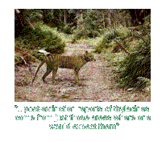
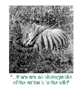

|
Sightings
Since the death of Benjamin, there has been a constant stream of sightings reported each year. More than 400 official sightings have been reported to date. The sightings begin
In 1981, the Australian government hired professional tracker Kevin Cameron to investigate sightings of a strange animal in Western Australia. Cameron soon reported that he saw the animal and said that it was a thylacine. In 1985, Cameron produced a series of alleged photographs of a living thylacine. The pictures were initially convincing, but analysis cast doubts on their authenticity: the animal's head was never shown, its body never changed position, and the photos were taken from wide variety of angles that were inconsistent with Cameron's story of a 20 to 30 second encounter. Cameron's photos are generally judged to be of a fake or stuffed thylacine. This explanation raises the possibility that Cameron may have killed a living thylacine and staged these photos, to avoid the government's $5,000 fine that would apply to the killing of a thylacine, which is still listed as a protected species. In January 1995, a Parks and Wildlife Service officer observed a Tiger in the town of Pyengana northeast of Tasmania, and being the most reliable sighting in some time, the government launched an investigation to possibly confirm the existence of the Tiger. All sightings are taken seriously, just in case. The thylacine has also been recently spotted alive and well as far afield as Indonesia and England. These reports have no more credibility than the average Bigfoot sighting, or maybe even less, since there is no documented data on Bigfoot's exclusive habitats. But the thylacine has become one of the favorite topics of modern cryptozoology, even attracting the attention of famous adventure-seekers like Walt Disney, Sir Edmund Hillary, and Ted Turner, who have all searched for the creature. Are they still out there? Some experts are willing to concede that a small number of thylacines may survive in hiding somewhere in Tasmania, but despite a vast number of sightings and discoveries of alleged thylacine tracks, not concrete evidence of the species' survival there has yet been produced. Professor Henry Nix has computer analyzed the Tasmanian habitats and found that areas could still support thylacines. The professor's work has already proved the existence of another marsupial, Leadbetter's possum, in the forest where it was thought to be extinct. H. Nix, of the Australian National University's Center for Resource and Environmental Studies, has a computer program based upon detailed descriptions of climatic, topographic, and environmental factors that identifies areas where a particular animal or plant could flourish. Nix gathered the environmental requirements of the thylacine from records of where they had been shot and trapped in the past. This plus the computer program allowed Nix to identify prime thylacine territory. Comparing this information with the best sightings over the past 60 years, Nix found perfect agreement. In other words, post-extinction reports of thylacines come from just those areas where one would expect them. Jurassic Park There are those who now believe that with the new found ability to clone animals, there is a chance we may be able to repopulate the Australian continent and other prier homes to the Thylacine. In the movie Jurassic Park, scientist used DNA from the blood of insects frozen in amber to bring back herds of dinosaurs. We know this to be impossible because DNA is damaged too much over this time period to be of any use. Jurassic Park may have been based on flawed science, but it would be possible to reconstruct the DNA in a museum specimen of a thylacine less than 80 years old. As Chris Packham speculates, "In the future, the thylacine could be brought back to life, a tragic story of ignorance reversed by knowledge."
|